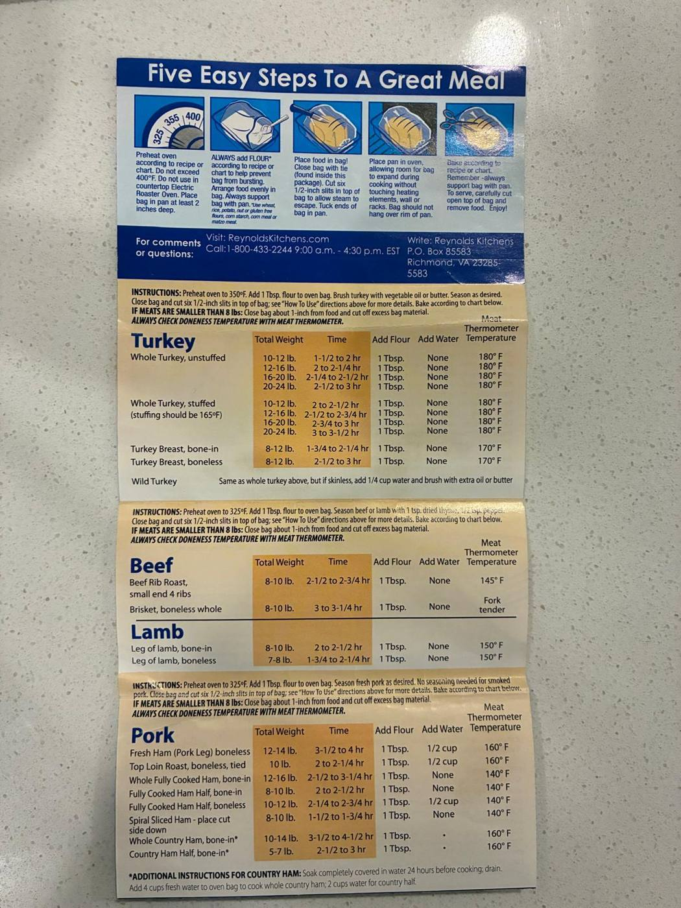

Mains
Traditional Holiday Turkey
From Reynolds
Oven350°F
Bake1½–3 hours, by weight
Done180°F in the thigh
Allow½ lb per person


Mom's original card (front and back) · tap to enlarge
Ingredients
Method tap a step to mark it done
- Heat the oven to 350°F.
- Shake the flour in the oven bag and place it in a roasting pan at least 2 inches deep. Spray the inside of the bag with nonstick spray to reduce sticking, if desired.
- Add the vegetables to the bag.
- Remove the neck and giblets from the turkey. Rinse and pat dry. Lightly stuff with your favorite stuffing, if desired. Brush the turkey with oil.
- Place the turkey in the bag on top of the vegetables. Close the bag with the nylon tie and cut six ½-inch slits in the top.
- Insert a meat thermometer through the bag into the thickest part of the inner thigh, not touching the bone. Tuck the ends of the bag into the pan.
- Bake until the thermometer reads 180°F: 1½–2 hours for 10–12 lb, 2–2¼ hours for 12–16 lb, 2¼–2½ hours for 16–20 lb, 2½–3 hours for 20–24 lb. Add ½ hour for a stuffed turkey.
- For easy slicing, let it stand in the bag for 15 minutes. If the turkey sticks to the bag, gently loosen the bag before cutting open the top.
Mom’s tips
- Herb roasted version: instead of plain oil, brush with 2 tbsp vegetable oil or melted butter, then rub with 1 tbsp dried sage, 1 tsp each dried thyme, basil, rosemary, paprika and seasoned salt, and ½ tsp pepper. Spray the bag with nonstick spray if desired (helps with large turkeys).
- Two turkey breasts at once: two bone-in breasts (4–8 lb each) with 2 onions cut in eighths and 4 sliced celery stalks, brushed with oil and sprinkled with seasoned salt and pepper. Bake at 350°F for 1½–2 hours, until 170°F; let stand 10 minutes.
- Oven-bag chart (on the back): whole stuffed turkey 180°F (stuffing 165°F); bone-in turkey breast 1¾–2¼ hr and boneless 2½–3 hr for 8–12 lb, both to 170°F.
- Never set the oven above 400°F with an oven bag, and don't let the bag touch the oven walls or heating elements.